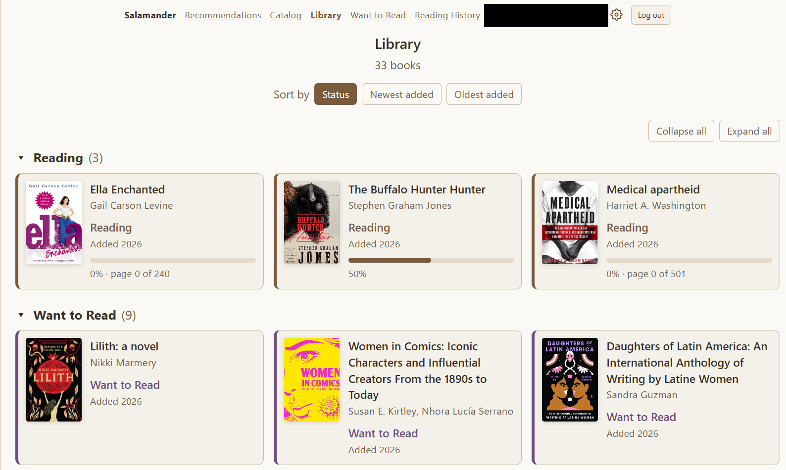
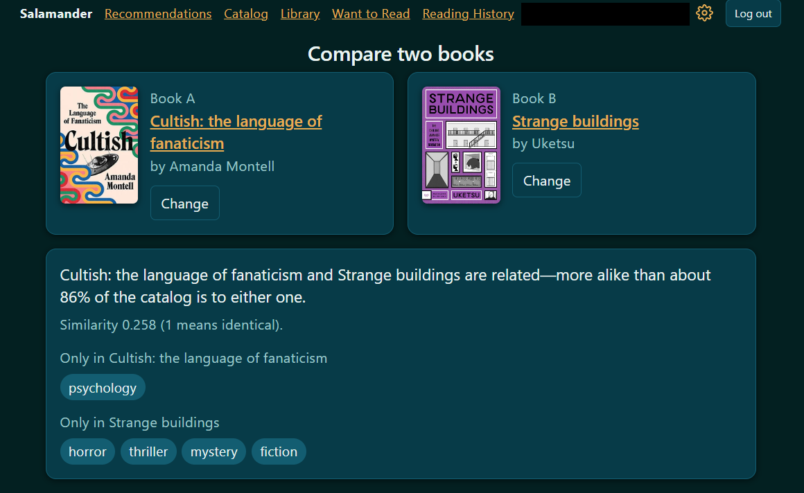
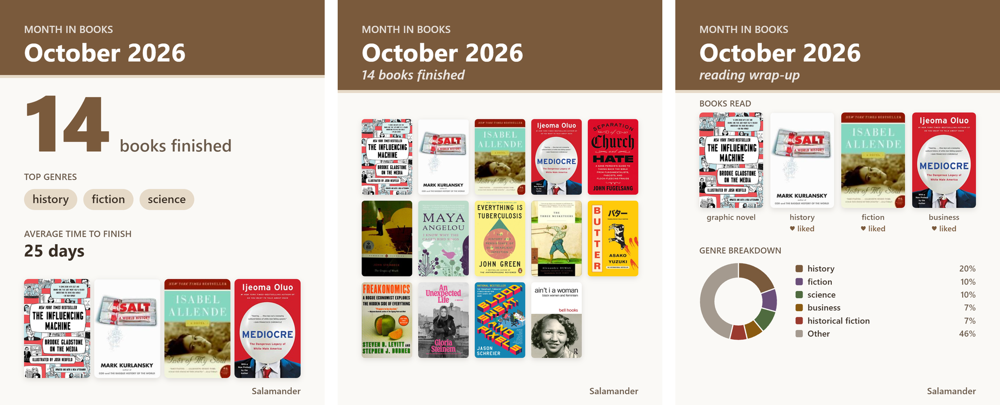

The goal
In my last entry, Salamander had its core logic but not much polish — functional wireframes, running only on my laptop. The goal this month was twofold: make it look like something I'd want to open, and get it off localhost. Would an app that grew up on one machine survive a real deployment — and still feel like one app once the extras piled on? Mostly yes, with a few detours — and ten of the twelve milestones now done.
What I built
A look that's checked, not just chosen (Milestone 7). Dark mode grew into nine themes — light, dark, and seven drawn from interior and pattern images I liked. The rule that kept it manageable: every color lives in one file, and components only use CSS variables, never a hard-coded hex. A small script checks each theme against the WCAG contrast guidelines, so a pretty palette can't quietly make a button unreadable. Optional yearly reading goals, with pace and stats, landed in the same milestone.
The Library, in a light theme

Compare Two Books, in a dark theme

Fig. 1 — One app, two of the nine themes. The Library sorts by status and shows progress bars on books I'm reading; Compare Two Books explains similarity in a plain sentence and lists the genre tags each book has alone.
A Library I can edit (Milestone 8). The Library sorts by status and year added, and the reading log is editable — start and finish dates can be backfilled, because nobody's reading history begins the day they sign up. Month in Books turns a month of finished reads into shareable cards, drawn on a canvas that reads the active theme's CSS variables so they always match.

Fig. 2 — Month in Books for October: the summary, all-covers, and wrap-up cards, each drawn from the active theme's colors.
Extras on the same embedding space (Milestone 9).
Every book now has its own page, with a "Why would I like this?"
button that explains any catalog book against my taste centroid,
plus a diversity digest that reuses the Milestone 3 gap scoring. All of
it runs on the same all-MiniLM-L6-v2 vectors already
stored in pgvector, so neither needed a new model — which answers last month's
question: the dual-centroid design absorbed the extras
without strain.
Progress and fallbacks (Milestone 10). Reading progress is stored as a percent first and a page number second, so a bar survives a corrected page count. Compare Two Books explains similarity in a plain sentence, and skipping onboarding now gives ten NYT bestsellers on a schedule instead of a live call each time.
Fig. 3 — The deployed stack. The browser only talks to Vercel; the API keys stay on the backend.
Getting it off localhost. My advisor suggested
Railway for the API and Vercel for the front end, with Supabase
underneath — and Salamander is now live at
salamander-capstone-project.vercel.app.
Step one was unglamorous: swapping every hard-coded
localhost:8000 for one environment variable. Step two
was a real bug — the backend crash-looped on startup. I blamed
request size, then HTTP/2, and was wrong both times; the logs
finally showed a Railway variable where my Supabase key had
swallowed a trailing newline and the next line of my
.env. Startup was also downloading the whole catalog
just to average genre embeddings, so a Postgres function now does
that in the database.
Retrospective
What went right: last month's promise stuck — I said I'd verify work against the running app, and every addition is now checked on the deployed site, not just my machine. The one-file theme system also meant new screens inherited the look without rework.
What went wrong: I guessed at the deployment crash twice before reading the logs closely, and secrets showed up in one of them, so I rotated them. Paperwork still trails the code.
How I'll improve: read the logs first and write each finding the day I verify it.
Time and what I learned: I finished four milestones in about four weeks, though deployment debugging and paperwork ate hours I'd budgeted for features. I'm leaving the month with practical skills — reading deployment logs, contrast-checking a design system, running a real deployment — plus a deployed recommender and a second thesis draft. My HCI coursework on usability and data visualization shaped the contrast checks, the plain-language labels, and the reading charts.
Working with my advisor: At an early-November check-in I reviewed my roadmap with him and left with a plan for the last milestones: a landing page, a login and homepage redesign, an admin back end, and a staging deployment. On November 19 I demoed Milestone 10 live; he was glad to see it deployed, and he's emailing feedback on my thesis draft.
Ready for the next phase?
Mostly. Two milestones remain, and they're the visible ones: a landing page, redesigned login, and real logo, then an admin back end and a staging pipeline. After that, the defense. Does an app that does this much still tell one clear story to someone seeing it for the first time? That landing page has to answer it.